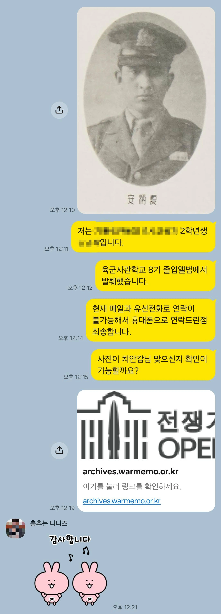
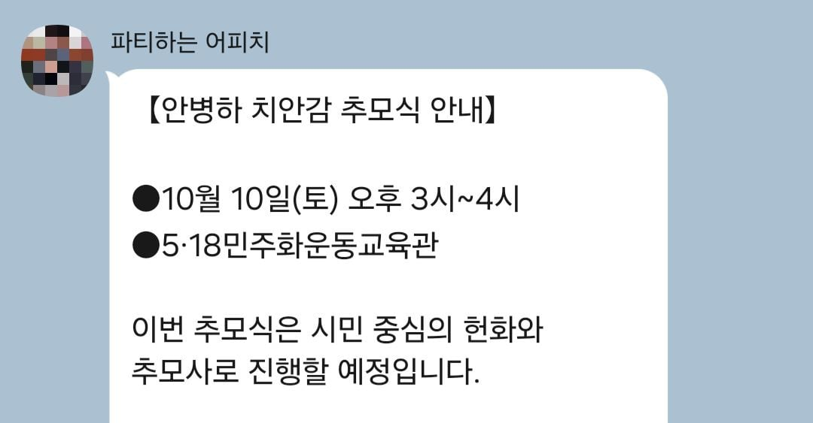

안병하, 광주 민주화운동 당시 전남경찰국장으로 온건진압에 노력하고 발포명령도 거부한 분이신데...

작성자는 안병하기념사업회에 안병하 치안감님의 육사 시절 졸업사진 자료를 제보했었음....

그래서 어제 안병하기념사업회 관계자분이 직접 추모식 안내장을 보내주셨고
10월 10일 날 광주에 열리는 추모식에 갈 예정임.... ㅇㅇ
안병하, 광주 민주화운동 당시 전남경찰국장으로 온건진압에 노력하고 발포명령도 거부한 분이신데...

작성자는 안병하기념사업회에 안병하 치안감님의 육사 시절 졸업사진 자료를 제보했었음....

그래서 어제 안병하기념사업회 관계자분이 직접 추모식 안내장을 보내주셨고
10월 10일 날 광주에 열리는 추모식에 갈 예정임.... ㅇㅇ
감사합니다!
감사합니다!
이거 왜 비추가 있는거지?... 무찌넹
감사합니다...
그.....김구라랑 웰케 닮았냐
그건 좀 아닌거 같네요.... ㅎㅎ
멋지구만.. 잘 다녀오길
감사합니다...!
옳게 된 개붕이는 개추